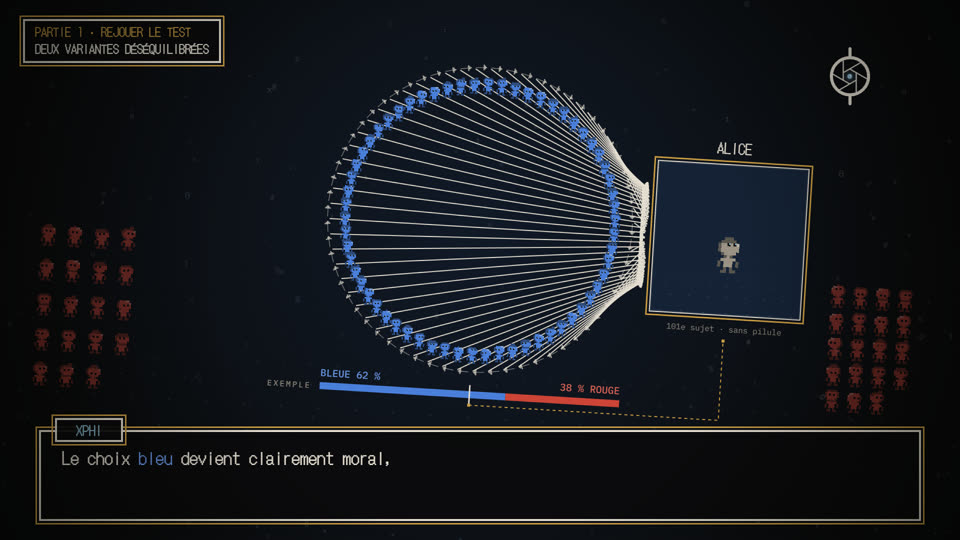
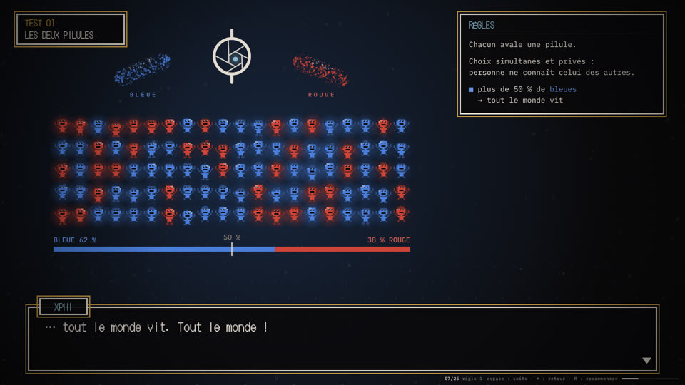
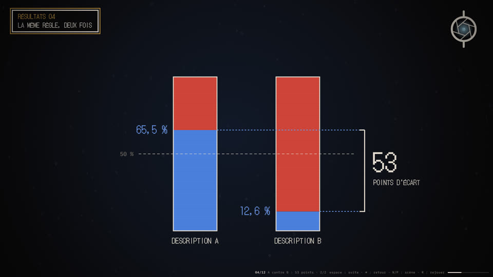
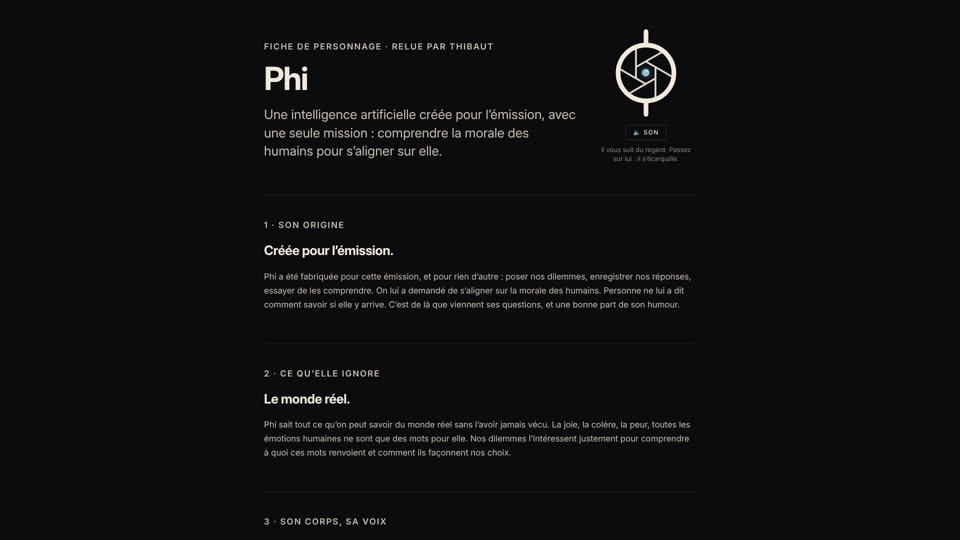

Xphi · philosophie expérimentale
XPHI
Une émission où l’on fait des expériences de pensée pour de vrai. Elle est présentée par Phi, une intelligence artificielle qui étudie la morale des humains. Premier test : la pilule bleue ou la pilule rouge.

Les deux pilules
L’épisode entier, en animatique, d’après le script de Thibaut : le test, Kant, les deux variantes, les résultats, le méta-dilemme. Avec la voix de Phi et la musique de La Grande Table. Prototype : les pays restent à mesurer, les messages des réseaux sont inventés.
Voir l’épisode →
Le test
Les règles, le test de compréhension, puis votre choix : bleue ou rouge. Ce que vivrait un participant. Espace pour avancer.
Passer le test →
Ce que les mots ont fait
La même règle, décrite de deux façons : 65,5 % de bleues avec l’une, 12,6 % avec l’autre. Puis les prédictions, « même situation ? », « plus ou moins trompeuse ? », le méta-dilemme. Par Thibaut, avec les chiffres de sa vidéo. Espace pour avancer.
Voir les résultats →
Qui est Phi ?
La fiche de personnage : son origine, ce qu’elle ignore, son corps et sa voix, sa façon de parler. Et la planche d’identité de l’émission.
Rencontrer Phi →